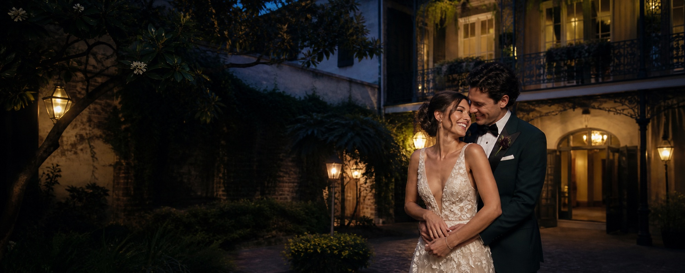
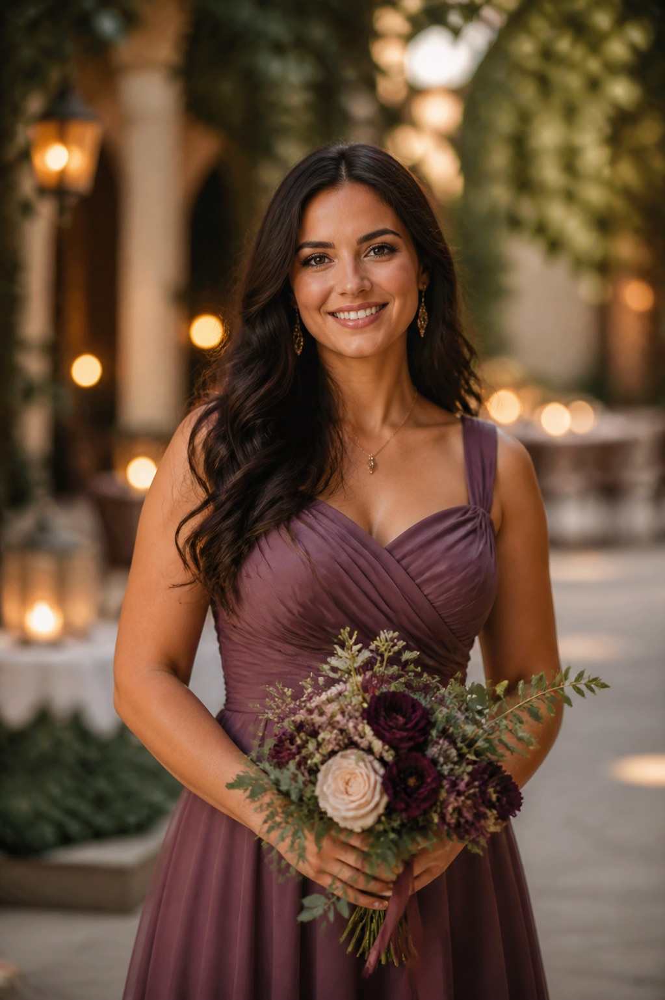
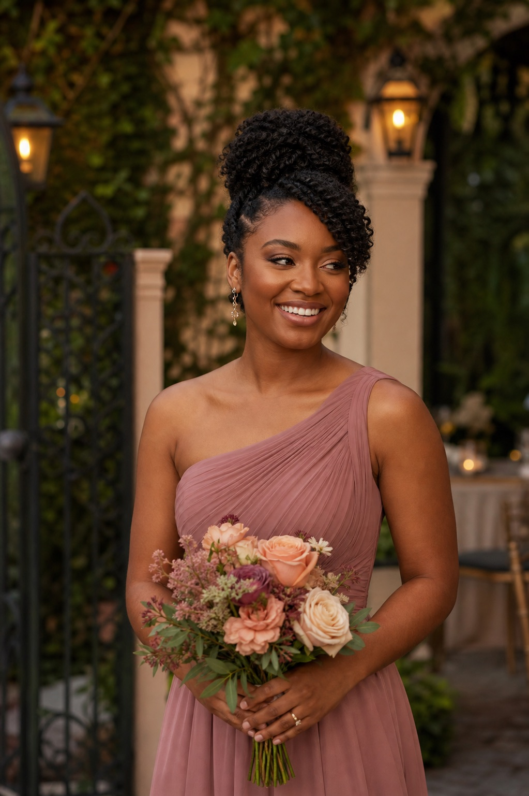
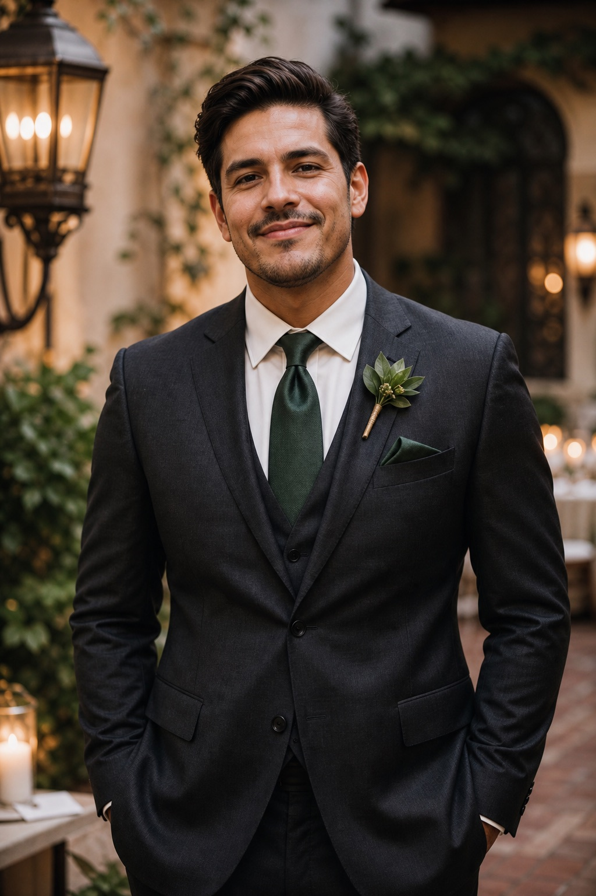

First up
Welcome toast at The Elysian Bar
Saturday027:00 PM
View the full weekend ↓
New Orleans · October 2–4, 2027
A little New Orleans.
A whole lot of love.
Everything Bea and Milo’s favorite people need for one unforgettable wedding weekend—beautifully together and easy to find.

First up
A note from us
Somewhere between long dinners, one more song, and the everyday little things, we found our forever. Now we get to celebrate it with you.
Join us in New Orleans for a weekend of courtyard toasts, good food, and a dance floor we hope never empties.
All our love, Bea & Milo
October 2–4, 2027
All times are local to New Orleans. Wedding-party members can find rehearsal and getting-ready times in the party guide.
The Elysian Bar
Festive cocktail attire. Drop in when you arrive.
Marigny Opera House
Please arrive by 4:40 PM. Black-tie creative.
Maison de la Luz · Guest House
546 Carondelet Street. Cocktails from 5:30 PM.
Maison de la Luz and Audubon Cottages are our sample weekend bases. This demo has no reserved room block or booking code.
Explore the hotel location ↗Fly into Louis Armstrong New Orleans International Airport. Arrange a ride to the ceremony; reception valet uses the Carondelet entrance. Return hotel shuttles begin at 10 PM, every 20 minutes.
Leave room for a French Quarter stroll, live music, and something sweet. Comfortable walking shoes are always a good idea.
Venue map & calendar ↓Reception ready
Find your table before you hit the dance floor.
Sample guest list: try Camille, Uncle Rob, Jessica, or Evelyn.
Monday evening
Dinner, toasts, and a little New Orleans magic at Maison de la Luz.
Guest House garden
Reception salon
Find your table and settle in
Champagne encouraged
Meet us by the dance floor
Song requests welcome
Beignets and chicory coffee
Carondelet Street entrance
Your turn, DJ
That song you can’t sit still for? We want to hear it.
Try a sample request. Nothing is sent to a DJ or saved after you leave this page.
The people beside us
Friends, family, and the first people on the dance floor.

Bea’s college roommate
Can identify almost any song in the first three seconds.
Milo’s cousin and lifelong co-conspirator
Once drove eight hours to deliver Milo’s forgotten passport.

Bea’s cousin
Designed the hand-lettered place cards you’ll see tonight.

Milo’s oldest friend
Claims he taught Milo every useful dance move he knows.
For the people standing beside us
Rehearsal, getting ready, attire, and the little details that make the day easier.
Wedding-day transportation now leaves each getting-ready location 15 minutes earlier. The schedule below is current.
Updated Sep. 18The weekend
This is the wedding-party version—just the moments and arrival times that matter to you.
Saturday · Everyone
Join whenever you arrive. A reserved courtyard area and first round will be waiting.
Open map ↗Sunday · Wedding party
A relaxed ceremony walk-through followed by dinner nearby. Transportation is not needed.
Open map ↗Sunday · Wedding party + family
Dinner begins promptly at 6:30. Partners named on the invitation are warmly included.
Open map ↗Monday · Bridesmaids
Arrive with clean, dry hair and a fresh face. Breakfast, coffee, and lunch are provided.
Your room details ↓Monday · Groomsmen
Monday · Everyone
Wedding party and immediate family should arrive photo-ready. Please keep phones and bags with the host.
Open map ↗Monday · The reason we’re here
Lineup begins at 4:40. A short second line follows the ceremony. Continue to Maison de la Luz for cocktails, dinner, and dancing.
Add to calendar ↗
Getting ready
Hair and makeup stations, breakfast, lunch, robes, steamers, and sparkling water will be ready.
Lunch, music, garment steamers, boutonnières, and a quiet room for last-minute toast practice will be ready.

The look
Bea and Milo chose rich color, clean tailoring, and details that feel a little unexpected.
Your chosen dress, nude or metallic shoes, and simple gold jewelry. Bouquets are provided.
White shirt, black bow tie, black shoes and socks. Boutonnières and pocket squares are provided.
Deep jewel tones, champagne, and black are lovely inspiration—not a requirement.
Ceremony lineup
Meet the ceremony host at 4:35 p.m. Phones, bags, and drinks stay in the green room.
Who to call
Bea and Milo are officially off duty. These fictional demo contacts have the answers.
Maid of honor · morning details
Best man · transportation help
Demo wedding concierge
Lost item, wardrobe fix, or quiet moment
All phone numbers are fictional and included for demonstration only.
A note from us
“The thing we want most is for you to be present. Eat the good food, dance badly, make a new friend, and remind us to take it all in.”
Love, Bea & Milo
Choose one for this sample vote.
Wedding-party quick view
Audubon Cottage No. 4
Maison de la Luz
Do not miss your assigned car
Marigny Opera House courtyard
Phones and bags in green room
Second line follows
Last little things
To keep the rooms calm and comfortable, getting-ready spaces are reserved for the wedding party. Partners can join the welcome toast, rehearsal dinner if invited, and wedding festivities.
A labeled green-room shelf will be available at the venue. The room host can help secure personal items before photos.
Yes. Breakfast and lunch are provided in Bea’s room; lunch and snacks are provided in Milo’s room. Please share dietary needs in advance.
The wedding party leads a short second line through the Marigny, then continues to Maison de la Luz for cocktails, dinner, and dancing.
Contact Camille, Theo, or the fictional demo concierge listed above—not Bea or Milo.
Kindly reply by September 1, 2027
We can’t wait to have our favorite people together.
This is a sample RSVP. No personal information is sent or saved.
With gratitude
Your presence means the world to us. Here’s a little glimpse of what we’re dreaming of for our next chapter.
Sunday-morning coffee cups, a table with room for friends, and the things that turn a house into home. Your own wedding package can link to your chosen stores.
Slow mornings and a trip to remember. This sample honeymoon fund is a preview; no gifts or payments are collected.
A little guest challenge
No scorekeeping. Skip anything that isn’t your style, and share your favorite moments on our separate Guestbook Live page.
Choose Share a Memory on the guestbook page to add your photo, video, voice message, or note.
Good to know
Black-tie creative: rich colors, polished tailoring, and comfortable dancing shoes. Wedding-party outfit details are in the attire guide.
Please follow the names on your invitation. The RSVP guest count should include only your invited party.
Return shuttles leave the Carondelet Street entrance at Maison de la Luz every 20 minutes from 10 PM through the send-off.
Reception restrooms are past the salon, through the arched hallway on the left. Sample Wi-Fi: MaisonGuest · password: beaandmilo.
Our Guestbook Live page ↗ collects photos, videos, voice messages, and notes. Visit as often as you like throughout the celebration.
The RSVP and DJ forms show a sample confirmation on this page. They don’t contact the couple, send music to a DJ, or store your information. Guestbook Live is a separate live experience.
Every side of the celebration
Photos. Stories. Voice notes. All the moments we’ll want to come back to.